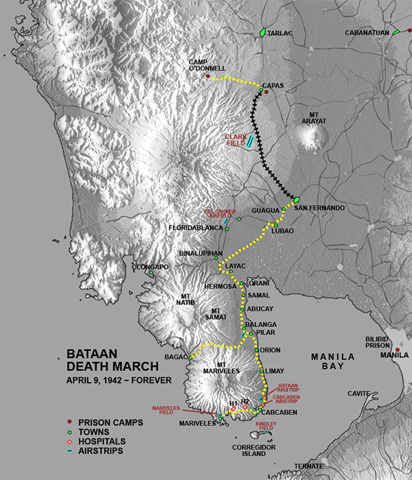

|
j
a v a s c r i p t |
| Pg.1 | Pg.2 Death March |
January 31, 1944
The sworn statements from escapees McCoy, Dyess and Mellnik included details of the three Australian civilians executed for escaping from Santo Tomas, probably contrary to international law. The revelations made an impression on the American public, but the remaining prisoners and internees will pay a price. Santo Tomas begins to feel it tomorrow — the last day outside-food will be allowed into the camp. After February 8, all communications will be cut off. By March, everyone including priests and nuns will be interned. This week, internees in Mary Chiles', St. Joseph's and Remedios hospitals will move back into the camp or the PGH, San Lazaro, and other hospitals in the area. POWs will pay an even bigger price. BATAANI haven't paid too much attention to Bataan, figuring Joe would tell me one day. Last night I learned a great deal of that astonishing story. The Front Lines were held by the youthful Filipino Army — not the veteran Scouts or the 31st Infantry! The latter were behind the lines, tasked to seal any holes made by the Japanese. The truth was that there were 100,000 Filipinos and 30,000 Americans. Many were kept in the dark about the general situation. "Is help coming?" "What is expected of us?" "Don't you think we ought to be told?" Apparently even Wainwright didn't know! Only two men knew: MacArthur and maybe Sutherland. They certainly didn't know about saving Australia. It was news to them! Throughout the ordeal they kept watch on Subic Bay, to find time and again it was filled with Japanese ships — which meant another impending attack. It was during one such period that three PT-boats dashed out and scored a direct hit on a light Japanese cruiser. Incidentally, the February 26th night raid on Manila wasn't ordered, they were tasked for reconnaisance. On the 20th of March, during an exclusive conference of American generals, Wainwright announced they had fuel for only 15 days and food for 20. It was inevitable that they would have to surrender. Ordered to the "Rock", he appointed Gen. King to handle the surrender. King was crushed to be the first American General in history to surrender. The end came quickly after the Japanese broke through our weakened lines. There was no point in further counterattacks with food about to run out in three days. King went to talk terms with the Japanese and was held hostage. Eventually the Japanese stopped attacking, and word filtered down to the USAFFE: "Hide your money and valuables — the Japs are taking it all." Then came that 160-km fateful walk in 6-days under the blazing sun! Food was passed around one day; you were terribly hungry the next day; used to it on the third day. You drank water insatiably, if you could find it. Your abdomen ached; your urine was bloodshot — a walk to hell: Capas. Up to the first week of July 22,000 Filipinos died there; all told some 30,000 to 33,000 are buried there, and it would have been 50,000 had the Japanese not released them. Few Americans were kept there, but some 2,000 died there and later 3,000 in Cabanatuan. Even the train ride to freedom was hell — there was no water or food on the train! |
|
|
|
|
|
| Pg.1 Bataan | Pg.2 |
Supplement Pg.2
January 31, 1944
“The Bataan Death March”

|